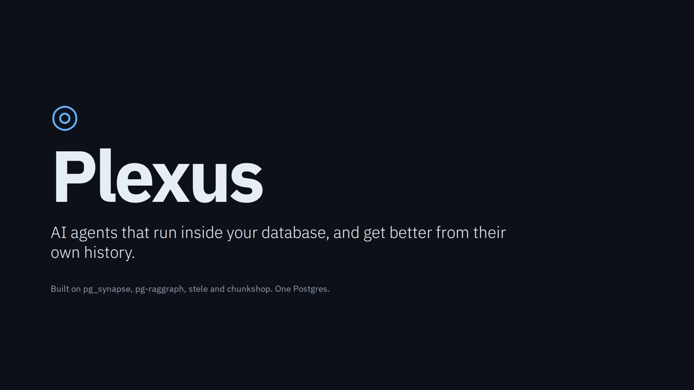

Postgres needs an agent loop. This one runs where the data is.
pg_synapse is a Postgres extension, written in Rust, that runs the LLM tool-calling loop inside the database backend. You call an agent from plain SQL, its tools are SQL running under Postgres privileges, and every message, tool call and cent lands in a table you can query. Bring any OpenAI-compatible model.
SELECT synapse.execute('triage_agent', 'Categorize ticket 42');The demo runs are real: Postgres 17, the extension, and a local Qwen3.6-35B-A3B on vLLM.
The slides
Click through with the arrow keys. This is the same deck the narrated video walks through.
Why put the loop in the database
- Governance for free
- Tool SQL runs under the caller's role. Permission denied is just Postgres doing its job. No new service account.
- Decisions inside the transaction
- An inline trigger agent can veto an INSERT; the write rolls back with the agent's reason as the error.
- Bounded by construction
- Max iterations, timeouts and cost caps are settings the runtime enforces. Every exit has a name: completed, timed out, cost cap exceeded, cancelled.
- Agents are rows
- Change them with SQL, review them like code, and
pg_dumptakes them along. Runs land insynapse.messagesfor auditing. - On RDS or another managed Postgres?
- Run the same kernel beside it as the sidecar. No extension on the database; the schema is plain DDL.
The honest limits: it runs inside a transaction, so CREATE INDEX CONCURRENTLY, VACUUM and ALTER SYSTEM become tickets for a human. Small local models stumble on long tool calls. An inline agent holds a backend while the model thinks. The demo has no auth and no TLS, so keep it off networks you don't trust.
Try it
The containerized demo needs Docker and an OpenAI-compatible endpoint whose model supports function calling (vLLM, llama.cpp server, LM Studio, Ollama, or real OpenAI). The first build compiles the extension inside the image, which takes 10 to 25 minutes cold.
git clone https://github.com/yonk-labs/pg-synapse && cd pg-synapse
# optional: skip retyping your endpoint in the UI
echo 'DEFAULT_LLM_BASE_URL=http://your-llm-host:8000/v1' > .env
echo 'DEFAULT_LLM_MODEL=your-model-name' >> .env
docker compose up --build # UI at http://localhost:8080, slides at /slides- Open
http://localhost:8080, check the LLM endpoint panel, hit Test, then Save. - Pick a scenario (index tuner, DBA tickets, ETL, transaction bouncer, guardrails, triage and more) and click Load.
- Run an agent and watch its messages, tool calls and cost appear. A probe tells you whether it passed.
- Want a SQL side channel?
psql "host=localhost port=55432 user=postgres password=postgres dbname=synapse_demo"
To install the extension into your own Postgres 15, 16 or 17 instead, use cargo-pgrx 0.18 and follow the extension quickstart. For managed Postgres, see the sidecar quickstart. The README covers the rest.
See it in a bigger system: Plexus

Plexus wires pg_synapse together with pg-raggraph, stele and chunkshop in one Postgres. A support-triage agent reads the refund policy that was in force on each ticket's date, vetoes a bad refund inside the transaction, cites evidence for every decision, and tunes its own harness from its past runs.